OTUS JOURNAL
Полезное
Графика в Python: Tkinter и Canvas 16 декабря, 2020
В статье рассматривается создание графических интерфейсов с помощью библиотеки Tkinter. Отдельное внимание уделяется виджету Canvas, предназначенному для рисования (draw) в Python.
Tkinter представляет собой графическую кроссплатформенную библиотеку на основе средств Tk. Это свободное ПО, которое включено в стандартную библиотеку языка программирования Python.
В состав Tkinter входит много компонентов. Один из них — Canvas, он же «Холст». Canvas применяется в Python для вывода следующих графических примитивов:
Но прежде чем продолжить, следует вкратце рассказать о существующих методах позиционирования элементов.
Позиционирование элементов в Python. Python grid
Для позиционирования элементов, во время работы с Tkinter используют разные методы:
Метод grid позволяет поместить элемент в конкретную ячейку условной сетки либо грида. Используется ряд параметров:
Для начала работы с Tkinter библиотеку сначала надо импортировать:
from tkinter import *
Ниже определен грид из девяти кнопок: 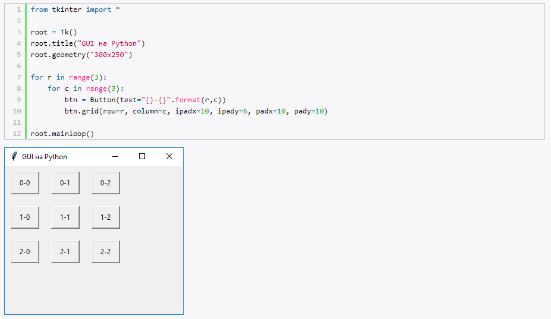
Canvas: рисуем линии в Python
Виджет Canvas предоставляет функциональность, с помощью которой разработчик может нарисовать (drawn) графику в Tkinter. Для чего может понадобиться эта графика? К примеру, для получения статистики, создания своих виджетов, отрисовки небольших игр.
Начинать освоение Canvas лучше всего с линий — примитивных геометрических элементов. В Canvas линию с нужным размером можно создать через метод create_line(). Метод mainloop используется для вызова окна виджета. 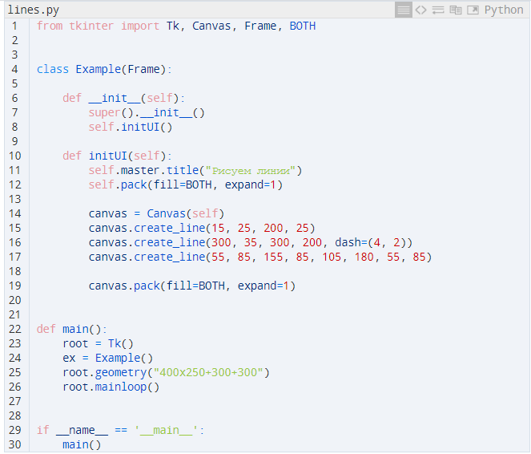
У create_line() есть параметры — это координаты x и y. Именно они обозначают начальные и конечные точки будущего линейного отрезка. Вот как этот метод рисует (draws) обычную вертикальную линию: 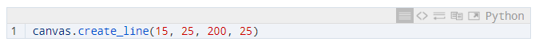
Можно создавать и пунктирную линию — для этого существует опция dash. У этой опции есть собственные значения, помещенные в скобки. В примере это (4, 2). 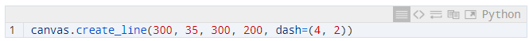
Что это значит:
Если прописать dash=(1, 1), на выходе получится линия из точек.
Когда рисуешь обычную линию, можно указать в качестве координат несколько конечных точек. Кусочек кода ниже отвечает за отрисовку треугольника — он ведь тоже состоит из простых линий.
В результате весь код отработает следующим образом: 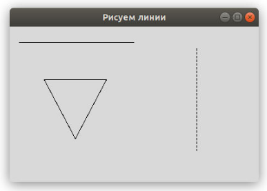
Canvas: рисуем цветные прямоугольники в Python
Цвет — это объект, отображающий комбинацию трех цветов (красного, зеленого, синего — RGB). С помощью кода ниже были нарисованы прямоугольники. Также они были закрашены различными цветами. 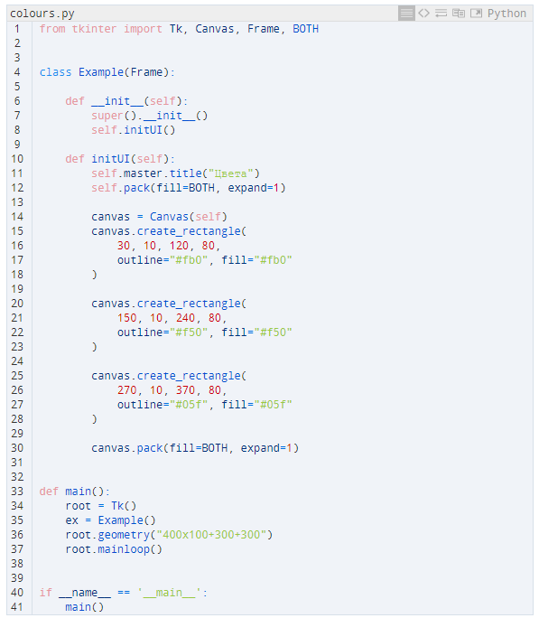
Так создается виджет Canvas: 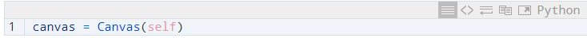
Далее создается прямоугольник, для чего используется create_rectangle(). Здесь надо прописать 4 параметра:
— x;
— y;
— координатное положение верхней левой ограничительной точки (левого верхнего угла);
— координатное положение нижней правой ограничительной точки (нижнего правого угла).
Если есть необходимость, то посредством параметра outline у прямоугольника задается цвет контура. Окрасить всю внутреннюю область можно с помощью параметра fill: 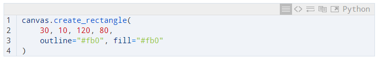
А вот и итоговый результат: 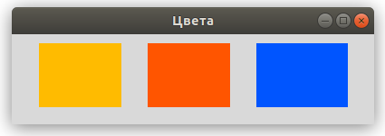
Рисуем сложные формы
Можно без проблем нарисовать круг, овал и прочие фигуры, включая криволинейные. Именно для этой цели и предназначен код ниже: 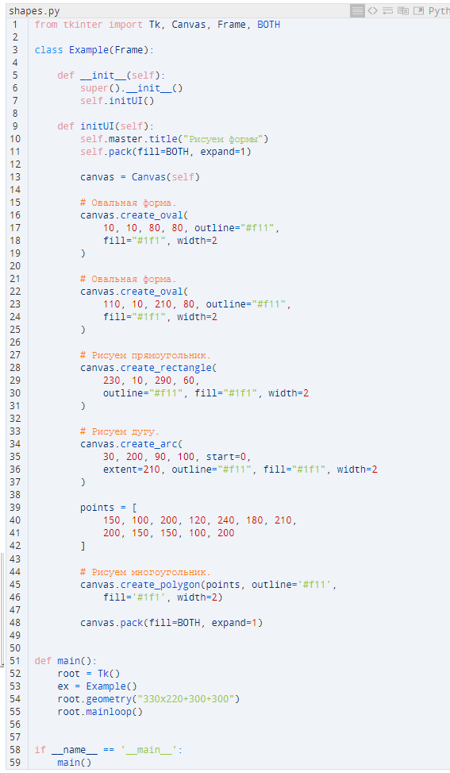
Благодаря этому коду будут созданы такие геометрические фигуры, как круг, прямоугольник, овал, дуга, многоугольник. Также следует обратить внимание на контур — он окрасится в красный цвет, а заливка будет зеленой. Ширина контура (width) — 2 px.
Сначала создается круг. Для его получения в Python задействуется метод create_oval(). Первые 4 параметра в нем нужны для указания ограничивающих координат. Здесь x и y являются координатами правой нижней и верхней левой точек квадрата, где помещен круг: 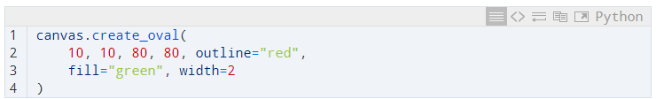
Аналогично создается и овал — меняются лишь первые 4 параметра.
Следующий этап — прямоугольник. Нарисованный restangle тоже имеет координатные значения x и y, играющие роль ограничительных точек. 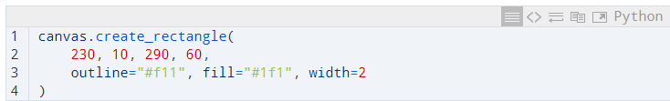
Далее создается дуга. Так как она — это часть круга, то надо указать ограничительные координаты дуги. Ее угол устанавливается посредством параметра start, а размер угла — с помощью параметра extent: 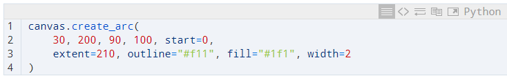
Последнее — это многоугольник. Так как присутствует много углов, надо задействовать специальный метод create_polygon(), позволяющий задать нужное число координатных значений: 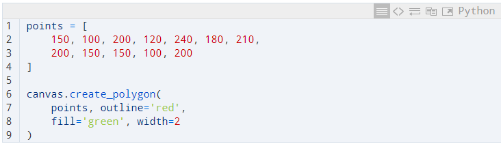
Остается посмотреть результат: 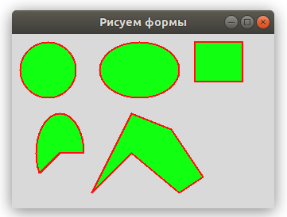
Также с помощью Canvas можно без проблем вставлять изображения и рисовать текст (text), используя шрифты разной высоты (height) и стиля (style).
Другие GUI-библиотеки для Python
Кроме библиотеки Tkinter и виджета Canvas, существует и масса других графических библиотек, применяемых для создания рисунков (drawings). Среди них:
При рисовании обычно применяется каскадный способ: компоненты добавляются поверх друг друга.
Drawing with Turtle
Отдельного упоминания заслуживает модуль Turtle (по аналогии с черепашками Turtles). Этот модуль позволяет создавать на Питоне рисунки и другие графические объекты, включая игры в специальном окне. Для того чтобы приступить к рисованию (drawing), надо сначала присоединить его (импортировать). Делается это одним из 3-х способов:
1) import turtle;
2) from turtle import open as t;
3) from turtle import*.
Drawing with Pygame
Pygame — набор модулей, используемый в тех случаях, когда нужно нарисовать 2D-игру. Также Pygame нередко называют библиотекой/фреймворком. С его помощью создают как компьютерные игры, так и мультимедийные приложения.
Pygame сравнивают с Tkinter, который с помощью своих функций и классов предоставляет языку программирования Python доступ к графической библиотеке Tk.
Если нужны дополнительные детали по теме, смотрите источники ниже:
{kind=link}